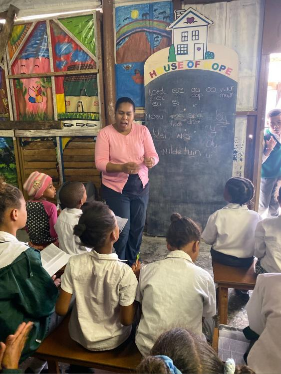

Eine verlässliche Grundlage für den Alltag.
Viele Kinder in Kranshoek brauchen Unterstützung bei ihren grundlegenden Bedürfnissen. Eine regelmäßige Mahlzeit schafft einen wichtigen Ausgangspunkt.
KRANSHOEK · SÜDAFRIKA · HALT & STÄRKEN
Im House of Hope and Glory finden Kinder eine warme Mahlzeit, Begleitung und Möglichkeiten, ihre Stärken zu entdecken.
Dieses Projekt unterstützen ↗
DAS PROJEKT ERKUNDEN
Die vier Stationen geben Orientierung. Über die fünf Bildpunkte lernen Sie die Angebote und ihre Verbindung zum Förderansatz kennen.
 1
1Eine warme Mahlzeit und verlässliche Begleitung im Alltag.

2Lesen, Schach und Fußball machen Interessen und Fähigkeiten sichtbar.
Bildung und Qualifizierung als mögliche weiterführende Anschlüsse.
Ein selbstbestimmtes Leben bleibt das langfristige Ziel.
Entdecken Sie die Angebote: Wählen Sie einen Bildpunkt im Berg aus.
Fünf Einblicke in das ProjektWählen Sie einen Bildpunkt per Mouseover, Klick oder Antippen. Die Familienarbeit ist als weiterführender Ansatz eingeordnet.
DIE PROJEKTGESCHICHTE
Viele Kinder in Kranshoek brauchen Unterstützung bei ihren grundlegenden Bedürfnissen. Eine regelmäßige Mahlzeit schafft einen wichtigen Ausgangspunkt.
Über die Versorgung hinaus bieten Lesen, Schach und Fußball Anlässe zum Lernen und zur Begegnung. Die Einbeziehung der Familien ergänzt die Begleitung der Kinder.
Durch gemeinsame Aktivitäten lernen die Verantwortlichen die Kinder und ihre Interessen kennen. So können passende weitere Fördermöglichkeiten erschlossen werden.
Die Zusammenarbeit mit lokalen Bildungs- und Qualifizierungsangeboten verbindet die erste Unterstützung mit weiterführenden Möglichkeiten. Nicht jedes Kind geht denselben Weg.
DIE ANGEBOTE IM DETAIL
Halt im Alltag
Das Essen nach der Schule gibt den Kindern einen verlässlichen Anlaufpunkt. Freiwillige Helferinnen tragen die Versorgung. Danach können die Kinder an weiteren Angeboten teilnehmen.
Zurück zur Projektkarte ↑Grundlagen stärken
Im Leseangebot geht es um das Lesen und das Verstehen von Texten. Kinder der Klassen 1 bis 7 bekommen so Unterstützung für ihre weitere Bildung.
Zurück zur Projektkarte ↑Stärken entdecken
Beim Schach können Kinder strategisches Denken, Geduld und den Umgang mit Herausforderungen üben. Anfängerinnen und Anfänger lernen ebenso wie Fortgeschrittene.
Zurück zur Projektkarte ↑Gemeinschaft erleben
Das Future-Stars-Angebot verbindet regelmäßiges Training mit Spielen und Begegnungen. Das gemeinsame Tun schafft Gelegenheiten, Fähigkeiten zu entdecken und Verantwortung zu übernehmen.
Zurück zur Projektkarte ↑Das Umfeld einbeziehen
Familien sind ein wichtiger Teil des Umfelds der Kinder. Die Einbeziehung der Eltern gehört zum weiterführenden Ansatz des House of Hope. Das Partnerprogramm Family Affairs von Life Choices unterstützt Familien beim Umgang mit schwierigen Lebensumständen.
Zurück zur Projektkarte ↑HOUSE OF HOPE AND GLORY FÖRDERN